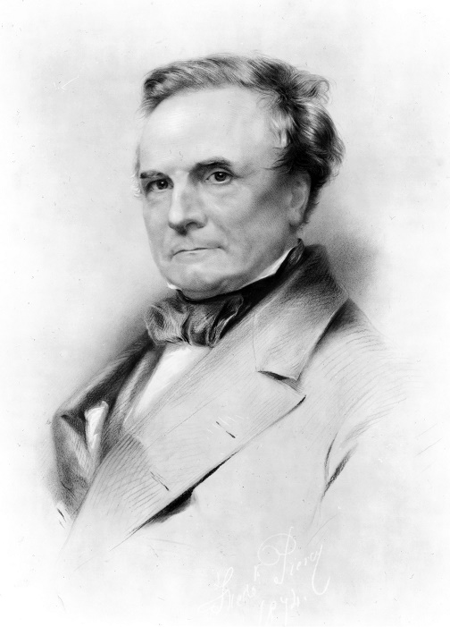
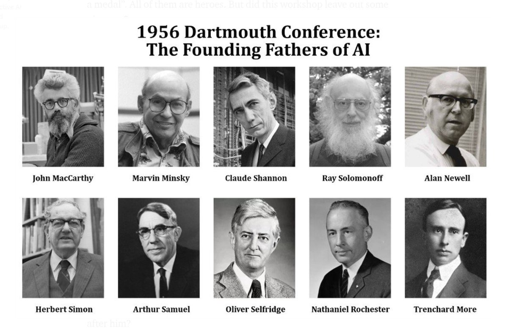
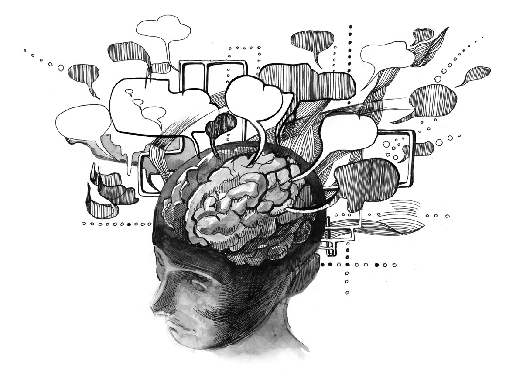
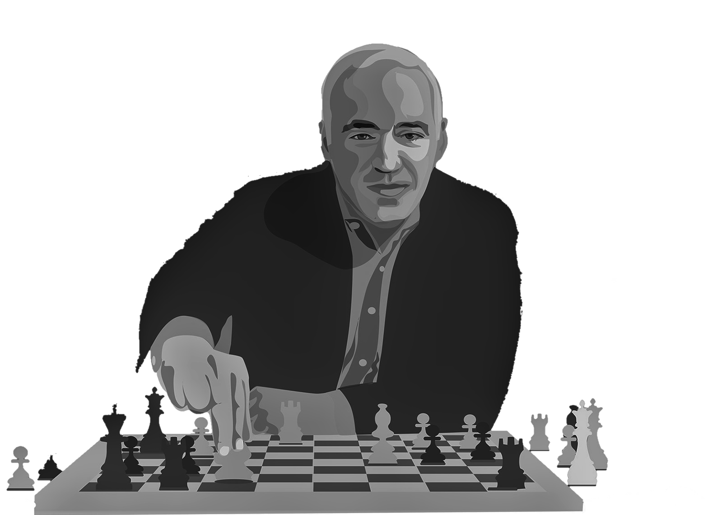
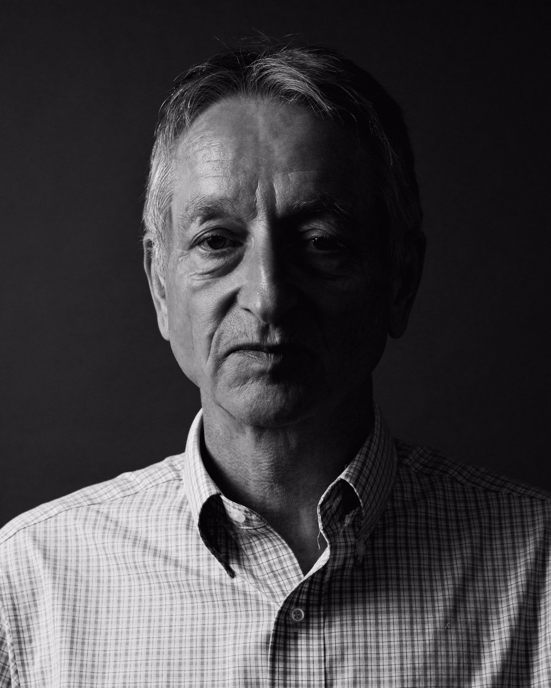
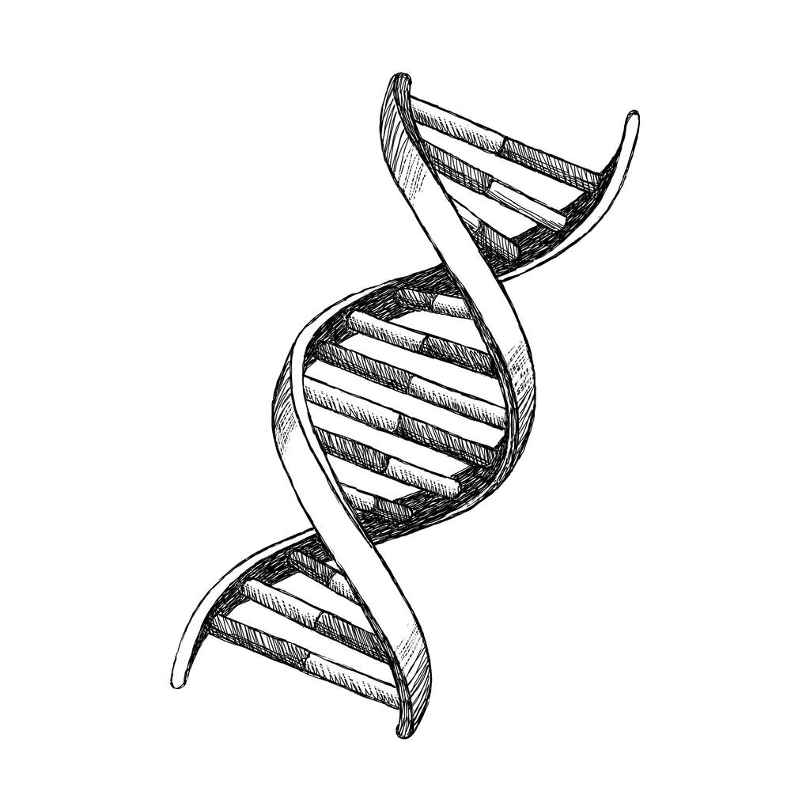

Как развивался ИИ
Хронология
Первая счётная машина
Машина Чарльза Бэббиджа
"Три закона робототехники"
"Игра в имитацию"
Конференция по ИИ в Дартмуте
Первая зима ИИ
Вторая зима ИИ
IBM побеждает Каспаров
Нейросеть видит кошек
Глубокие нейросети
Победа в го
ИИ создал ДНК человека
Машина Вильгельма Шикарда (1623)
Шикард построил первую механическую цифровую вычислительную машину. Машина содержала суммирующее и множительное устройства, а также механизм для записи промежуточных результатов. За ней последовали машины Паскаля и Лейбница.
Первая счётная машина

Машина Чарльза Бэббиджа(1822)
В 1822 году Чарльз Бэббидж создал первую небольшую модель своего аппарата, получившего название "разностная машина". Механизм разностной машины состоял из валиков и шестерней, вращаемых вручную при помощи специального рычага. Разностная машина могла управлять шестизначными числами и выражать в числах любую функцию, которая имела постоянную вторую разность. Ценность разностной машины Чарльза Бэббиджа в том, что она могла не только производить один раз заданное действие, но и осуществлять целую программу вычислений. Сам Бэббидж достаточно ясно представлял назначение своей машины. Он пропагандировал использование математических методов в различных областях науки и предсказывал при этом широкое применение вычислительных машин.
Чарльз Бэббидж

"Три закона робототехники" (1942)
Это объединяющая тема для всей фантастики Азимова. Он представил разумные машины более реалистичнее, чем это было раньше. Несмотря на то, что Азимов был писателем, его законы стали примером того, какой должна быть машина. Рассказ Азимова "Хоровод" отмечает первое появление в историях этого знаменитого фантаста «трёх законов робототехники»:
- Робот не может причинить вред человеку или своим бездействием допустить, чтобы человеку был причинён вред.
- Робот должен повиноваться всем приказам, которые даёт человек, кроме тех случаев, когда эти приказы противоречат Первому Закону.
- Робот должен заботиться о своей безопасности в той мере, в которой это не противоречит Первому или Второму Законам.
Айзек Азимов

"Игра в имитацию" (1950)
Первый задал вопрос о том, способна ли машина думать. Думал о том, можно ли считать машину разумной, если она может имитировать разумное поведение человека. Этот теоретический вопрос породил знаменитую «Игру в имитацию» (её позже назовут "Тестом Тьюринга"), упражнение, в котором исследователь-человек должен определить, с кем он переписывается – с компьютером или человеком.
Алан Тьюринг

Конференция по ИИ в Дартмуте (1956)
К 1955 году учёные всего мира уже сформировали такие концепции, как нейросети и естественный язык, однако ещё не существовал объединяющих концепций, охватывающих различные разновидности машинного интеллекта. Профессор математики из Дартмутского колледжа, Джон Маккарти, придумал термин «искусственный интеллект», объединяющий их все.
Маккарти руководил группой, подавшей заявку на грант для организации конференции по ИИ в 1956. В Дартмут-холл летом 1956 были приглашены многие ведущие исследователи того времени. Учёные обсуждали различные потенциальные области изучения ИИ, включая обучение и поиск, зрение, логические рассуждения, язык и разум, игры (в частности, шахматы), взаимодействия человека с такими разумными машинами, как личные роботы.
Общим консенсусом тех обсуждений стало то, что у ИИ есть огромный потенциал для того, чтобы принести пользу людям. Было очерчено общее поле исследовательских областей, на развитие которых может повлиять машинный интеллект. Конференция организовала и вдохновила исследования в области ИИ на многие годы.
Участники

Первая зима ИИ (1970-е)
Большую часть своей истории ИИ существовал только в исследованиях. Большую половину 1960-х правительственные агентства, в частности, DARPA, вливали деньги в исследования и практически не требовали отчёта по инвестициям. Исследователи ИИ часто преувеличивали потенциал своей работы, чтобы продолжать получать финансирование. Всё изменилось в конце 1960-х и начале 1970-х. Два отчёта – один от рекомендательного совета по автоматической обработке языка (ALPAC) для правительства США 1966 года, второй от Лайтхилла для правительства Британии 1973 года – прагматически оценили прогресс в исследованиях ИИ и выдали весьма пессимистичный прогноз о потенциале данной технологии. В обоих отчётах ставилось под вопрос наличие ощутимого прогресса в различных областях исследований ИИ. Лайтхилл в своём отчёте утверждал, что ИИ для задач распознавания речи будет крайне сложно масштабировать до размеров, которые смогут быть полезными правительству или военным.
В итоге правительства США и Британии начали урезать финансирование исследований ИИ для университетов. DARPA, без проблем финансировавшее исследования ИИ в 1960-х, стало требовать от проектов чётких временных рамок и подробного описания предполагаемых результатов. В итоге стало казаться, что ИИ не оправдал ожиданий, и никогда уже не сможет достичь уровня человеческих возможностей. Первая «зима» ИИ продлилась все 1970-е и 80-е.
Зима

Приход второй зимы ИИ (1987)
1980-е начались с разработки и первых успехов "экспертных систем", хранивших большие объёмы данных и эмулировавшие процесс принятия решений людьми. Технологию изначально разработали в университете Карнеги-Меллона для компании Digital Equipment Corporation, а затем другие корпорации начали быстро внедрять её. Однако экспертные системы требовали дорогого спеиализированного оборудования, и это стало проблемой, когда начали появляться сходные по мощности и более дешёвые рабочие станции от Sun Microsystems а также персональные компьютеры от Apple и IBM. Рынок экспертных компьютерных систем рухнул в 1987, когда с него ушли основные производители оборудования.
Успех экспертных систем в начале 80-х вдохновил DARPA на увеличение финансирования исследований ИИ, но вскоре это вновь поменялось, и агентство урезало большую часть этого финансирования, оставив всего несколько программ. И снова термин «искусственный интеллект» в исследовательском сообществе стал почти запретным. Чтобы их не воспринимали, как непрактичных мечтателей в поисках финансирования, исследователи начали использовать другие названия для работы, связанной с СС – «информатика», «машинное обучение» и «аналитика». Эта, вторая зима ИИ продолжалась вплоть до 2000-х.
Зима 2
IBM vs Каспаров (1997)
Шахматный компьютер Deep Blue от IBM победил тогдашнего чемпиона мира Гарри Каспарова. Из шести игр, проводившихся в телестудии, Deep Blue выиграла в двух, Каспаров в одной, а три окончились вничью. Ранее в том году Каспаров победил предыдущую версию Deep Blue.
Гарри Каспаров

Нейросеть видит кошек (2011)
К 2011 году учёные из университетов всего мира говорили о нейросетях и создавали их. В том году программист Джефф Дин из Google познакомился с профессором информатики из Стэнфорда Эндрю Ыном. Вдвоём они замыслили создание большой нейросети, обеспеченной огромной вычислительной энергией серверов Google, которой можно будет скормить огромный набор изображений.
Созданная ими нейросеть работала на 16 000 серверных процессорах. Они скормили ей 10 млн случайных и неразмеченных кадров с видеороликов YouTube. Дин и Ын не просили нейросеть выдать какую-то конкретную информацию или разметить эти изображения. Когда нейросеть работает таким образом, обучаясь без учителя, она естественным образом пытается найти закономерности в данных и формирует классификации.
Нейросеть обрабатывала изображения три дня. Затем она выдала три размытых изображения, обозначающих визуальные образы, которые она снова и снова встречала в обучающих данных – лицо человека, тело человека и кота. Это исследование стало серьёзным прорывом в использовании нейросетей и обучении без учителя в компьютерном зрении. Также оно отметило начало проекта Google Brain.
Нет слов, одни эмоции

Джеффри Хинтон спустил с поводка глубокие нейросети (2012)
Через год после прорыва Дина и Ына профессор Торонтского университета Джоффри Хинтон с двумя своими студентами создали нейросеть для компьютерного зрения AlexNet для участия в соревновании по распознаванию изображений ImageNet. Участники должны были использовать свои системы для обработки миллионов тестовых изображений и определять их с наивысшей возможной точностью. AlexNet выиграла соревнование с процентом ошибок в два с лишним раза меньшим, чем у ближайшего конкурента. В пяти вариантах подписи к изображению, данных нейросетью, только в 15,3% случаев не было правильного варианта. Предыдущим рекордом было 26% ошибок.
Эта победа убедительно показала, что глубокие нейросети, работающие на графических процессорах, куда как лучше других систем могут точно определять и классифицировать изображения. Это событие, возможно, сильнее остальных повлияло на возрождение интереса к глубоким нейросетям, и заслужило Хинтону прозвище «крёстный отец глубокого обучения». Вместе с другими гуру в области ИИ, Йошуа Бенджио и Яном Лекуном, Хинтон получил долгожданную премию Тьюринга в 2018.
Джеффри Хинтон

AlphaGo обыгрывает чемпиона мира по го (2016)
В 2013 году исследователи британского стартапа DeepMind опубликовали работу, где было описано, как нейросеть научилась играть и выигрывать в 50 старых игр от Atari. Под впечатлением от этого компанию купила Google – как говорят, за $400 млн. Однако главная слава DeepMind была ещё впереди.
Через несколько лет учёные из DeepMind, теперь уже в рамках Google, перешли от игр Atari к одной из самых старых задач ИИ – японской настольной игре го. Они разработали нейросеть AlphaGo, способную играть в го и обучаться во время игры. Программа провела тысячи партий против других версий AlphaGo, обучаясь на основе проигрышей и выигрышей.
И это сработало. AlphaGo обыграла величайшего игрока в го в мире, Ли Седоля, со счётом 4:1 в серии игр в марте 2016. Процесс снимали для документального фильма. При его просмотре трудно не заметить грусть, с которой Седоль воспринял проигрыш. Казалось, что проиграли все люди, а не только один человек.
Последние продвижения в области глубоких нейросетей настолько сильно изменили область ИИ, что реальная его история, возможно, только лишь начинается. Нас ждёт много надежд, шумихи и нетерпения, но сейчас уже ясно, что ИИ повлияет на все аспекты жизни XXI века – и возможно даже сильнее, чем в своё время это сделал интернет.
Го
ИИ создал полностью искусственную ДНК человека (2021)
Ученые, участвующие в исследовании, категоричны: полученные искусственные геномы реалистичны и не являются репродукциями существующих геномов. С другой стороны, они частично транскрибируют исходную базу данных, касающуюся, например, частоты аллелей, относящуюся к степени присутствия аллеля в генах популяции. Для исследователей эта методика позволяет сохранить многие сложные характеристики, встречающиеся в аутентичных геномах. В конце концов, разница лишь в том, что эти геномы не принадлежат ни одному донору. Но для чего можно использовать эти произведения? По мнению генетиков, их можно использовать в биомедицинских исследованиях. В этой области генетические данные представляют собой важный ресурс. С другой стороны, они редко используются из соображений конфиденциальности. Однако с искусственными геномами эта проблема больше не проблема.
Следовательно, исследование может быть основано на генетических данных вымышленных людей, чтобы позволить ИИ представить себе биологические характеристики, связанные с этими искусственными геномами. Однако исследователи не дали объяснения возможного более широкого применения такой возможности в генной инженерии.
ДНК человека
